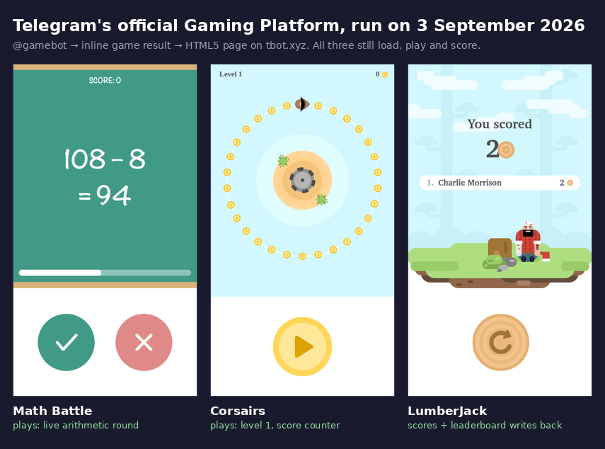

Telegram Online Games: The Official 3 Still Work in 2026
“Telegram game” is three incompatible things wearing one name, and which one you get decides whether you need to create a group, install nothing, or open a separate app. Every list I can find treats them as interchangeable. They are not, and the difference is invisible in a screenshot.
The one almost nobody writes about is Telegram’s own. Telegram shipped a Gaming Platform on 3 October 2016: real HTML5 games that live inside a conversation, with high scores saved per chat. It is a month short of ten years old. Nobody seems to have checked lately whether it still runs.
So on 3 September 2026 I played all three official games end to end, and then inline-queried nineteen game bots to find out how many still use the platform at all. The platform works fine. Exactly one bot in nineteen uses it, and it is Telegram’s own demo bot.
The three kinds of “Telegram game”
Before counting anything, the categories have to be separable by something a machine can read, not by vibes:
- Games API (2016). The bot answers an inline query with a result whose type is literally
game. The chat renders a play button; the game is an HTML5 page that reports scores back throughTelegramGameProxy.shareScore. Nothing gets added to your group. - Mini App (2023). The bot answers with an ordinary article carrying a URL button into a separate in-Telegram application. The chat holds a link, not a game.
- Chat bot. No inline mode at all. You add it somewhere and type
/commandsat it. This is what most surviving “game bots” are, and it is why so many of them demand a group.
That first category is the one with documentation nobody reads: the Gaming Platform docs still describe sendGame, setGameScore and the TelegramGameProxy bridge, unchanged.
How I counted who still uses it
For each bot: resolve it, then fire an inline query at it and classify the result objects it returns. Not its bio, not its pinned message. The objects. This matters, because Gamee’s bio says it is “the biggest gaming platform on Telegram” with 65 million players, and its results say something entirely different.
A result of type game means Games API. A result whose button points at t.me/<bot>/<app>?startapp= means Mini App. An error saying inline mode is switched off is a real verdict, not a failure.
One methodological trap, and it caught me. My first pass sent an empty inline query, and two bots came back with zero results, which says nothing about the bot, only that my query was empty. So I re-ran the ambiguous ones with four different queries ("", play, game, a). Same answer every time: no game results anywhere. A verdict built on one query shape is a fact about the query.
Anything I genuinely could not read is recorded as blind and counted separately, because “no games found” and “could not look” are identical in a total and opposite in meaning.
The result: one in nineteen
| What the bot returns | Count | Which bots |
|---|---|---|
Games API (game results) | 1 | @gamebot, Telegram’s own demo bot (3 games) |
| Mini App links | 1 | @gamee: 50 results, zero of them games |
| Inline mode switched off | 10 | UNO, Quizarium, Chess, Hangman, 2048, Snakes, Arena, Chat Against Humanity and two more |
| Inline on, zero results | 2 | @LumberjackBot, @PokerBot (empty on all four query shapes) |
| Inline on, but chat helpers | 5 | xoBot, unobot, wordibot, RatherGameBot, werewolfbot |
That last row is worth pausing on, because it is the closest thing to a near miss. Those five bots do answer inline queries, but with utilities, not games. Wordibot offers a difficulty picker (Beginner, Easy, Normal). Werewolfbot offers stats, kills, killedby. RatherGameBot offers “Get Question”. Unobot, with impressive honesty, returns a single result reading “You are not playing”. They adopted inline mode as a convenience layer over a chat game and never touched the Games API.
And there is a small joke buried in the table. @LumberjackBot, named after one of the three official games, has inline mode enabled and returns nothing at all, on every query I tried.
The three official games, played end to end
A URL returning HTTP 200 is not a working game, so I ran them. Each one: fetch the play URL out of the chat, open it, wait, tap it like a person would, and look at what is on screen.

All three load every asset with HTTP 200 (sprites, fonts, sounds) and all three call tbot.xyz/api/getHighScores successfully. Math Battle serves live arithmetic. Corsairs runs a coin-collecting level on a PixiJS canvas. LumberJack plays, ends, and posts a score.
The right-hand screenshot is the part I did not expect to get. That leaderboard row is the 2016 scoring loop closing in 2026: the game called TelegramGameProxy.shareScore, the score was saved, and it came back rendered with my Telegram display name attached. I scored 2, which is terrible, and it is on the record now.
The mistake my own probe made
My first automated pass reported Corsairs as broken. It sat on “Loading…” forever. I gave it 45 seconds, captured the network log (every request 200, no failed requests, no console errors, no page errors) and tried desktop, tablet and two phone widths. Stuck at every size, while LumberJack loaded fine as a control. Everything pointed at a dead loader in one of Telegram’s own demo games, which would have been a fun thing to publish.
Then I did the thing an actual player does within two seconds of a screen not moving: I tapped it. It started immediately.
Corsairs is not broken. Its splash screen waits for a gesture and never says so. That is a real and reportable flaw, a loading screen that lies about what it is waiting for, but it is a very different claim from “the game is dead”, and only one of them is true.
Gamee: the platform’s launch showcase has left the platform
Telegram’s 2016 announcement is specific about who would carry the platform. It says about thirty games were ready at launch, “most of them published by @gamee”, and it tells you to type @gamee into a group to start one.
I typed @gamee in 2026. Fifty results came back (Block Buster, Sunshine Solitaire, Neon Racer, Tents and Trees) and not one of them is a game result. Every single one is an article whose button opens t.me/gamee/game?startapp=…, a Mini App. Alongside the play button sits a second button labelled “💰 Earn”.
So the flagship publisher named in Telegram’s own launch post migrated off Telegram’s own games API. That is not a criticism of Gamee. Mini Apps are a more capable container, and the economics of a game you can attach a wallet to are obvious. It just means the Gaming Platform is now a road with one car on it, and the car belongs to the people who built the road.
Want games that need no bot, no app and no install?
The Telegram Party Pack is 255 group-chat games that run on nothing but the chat you already have: printable, no setup, no server to go dark next spring.
Get the pack — $9.99 Or start with the free party games list.How to actually play the official three
It takes about eight seconds and there is nothing to install:
- Open any chat: a friend, a group, or Saved Messages to practise alone.
- Type
@gamebotfollowed by a space into the message box. Do not send it. - A popup lists Math Battle, Corsairs and LumberJack. Tap one; it posts into the chat.
- Tap the play button. If you see “Loading…”, tap the screen once.
What you get that a Mini App does not give you: the game sits in the conversation, everyone in that chat shares one leaderboard, and nobody adds a bot to anything. What you give up is everything modern — three games, all from 2016, no progression, no account.
For two people specifically, this is one of the few options that needs no group at all, which puts it in the small set that survives the two-player test. And if you want zero bots whatsoever, Telegram’s dice, darts, basketball, football, bowling and slot-machine emoji work in any chat — I threw each one 900 times to confirm they are not weighted.
What I could not measure
Two limits, stated because a result without its boundaries is half a result.
The high-score API is bot-only. getGameHighScores refuses a user account outright, so I could not read the leaderboard through the API and confirm it independently. What I have is the in-game leaderboard rendering my own name after a real round — strong evidence the loop closed, but read through the game rather than through Telegram.
No score service message appeared in my chat. Telegram normally posts a “X scored N” note into the chat where the game lives. I saw none, but I played in Saved Messages, a chat with exactly one member, where a notification has nobody to notify. I am not claiming that feature is broken; I am saying I did not test it properly.
What this actually tells you
The Gaming Platform is not dead and it is not thriving. It is maintained, with assets served, scores recorded and docs still up a decade after launch, and almost entirely unused. Of nineteen game bots, seventeen return nothing game-shaped, one returns Mini Apps, and one returns games because Telegram wrote it as the example.
That is a specific and useful shape of answer, and it is the opposite of what a list would tell you. This is now the fourth pass I have made over Telegram’s game bots: in July, seven of eighteen recommended bots were already dead; in August the survivors held at eleven but the names underneath moved; on 1 September fewer than half of those worked for two people. Tonight: the platform Telegram built for exactly this has one user.
The practical takeaway is small and holds up. If you want a game inside your chat tonight, @gamebot works and takes eight seconds. If a screen says “Loading…”, tap it before you believe it. And if an article recommends a Telegram game bot, spend the fifteen seconds to send it /start yourself — because in four passes, the single most reliable finding is that the article is older than the bot’s last working day.